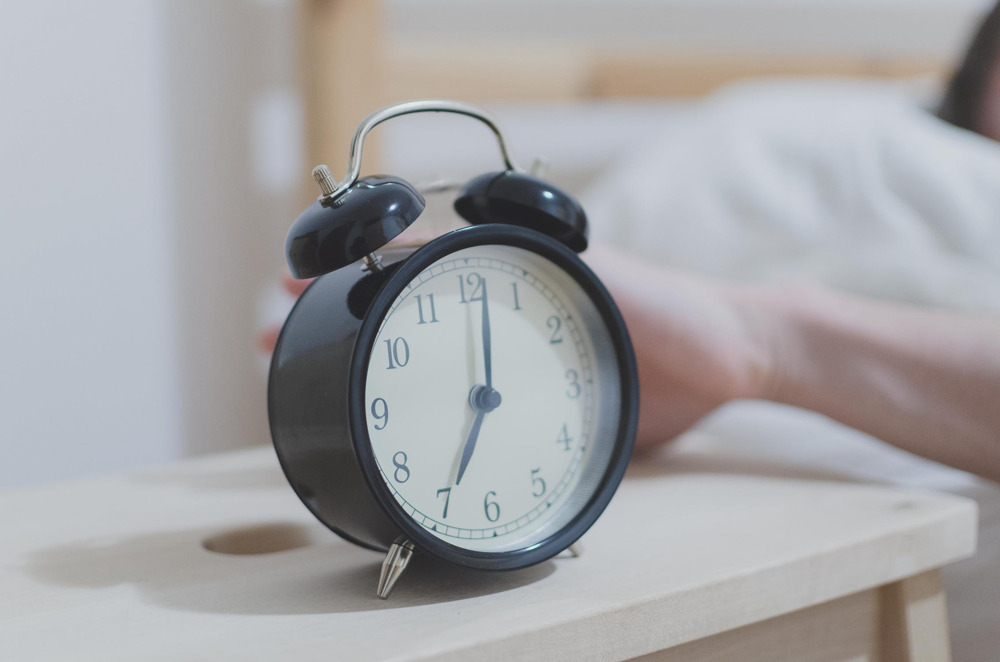
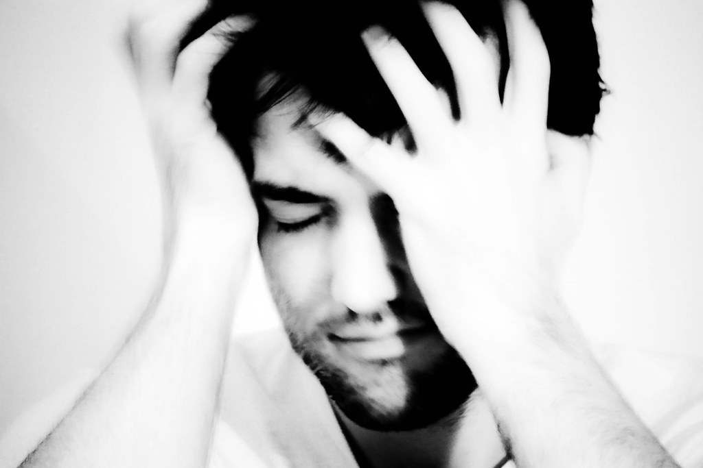

Home
Learn More About Sleep
Sleep Music
Record Sleep
Account
Home
Learn More About Sleep
Sleep Music
Record Sleep
Account
Sleep
Sleep is an important part of your daily routine. People spend about one-third of their time doing it. Quality sleep is as essential to survival as food and water. Without sleep you can not form or maintain the pathways in your brain that let you learn and create new memories, and it is harder to concentrate and respond quickly.
Sleep is important to a number of brain functions, including how nerve cells (neurons) communicate with each other. In fact, your brain and body stay remarkably active while you sleep. Recent findings suggest that sleep plays a housekeeping role that removes toxins in your brain that build up while you are awake.
Source: Brain Basics: Understanding Sleep. National Institute of Neurological Disorders and Stroke, Jun. 2019, https://www.ninds.nih.gov/Disorders/Patient-Caregiver-Education/Understanding-Sleep. Accessed April 2018.
Your need for sleep and your sleep patterns change as you age, but this varies significantly across individuals of the same age. There is no magic "number of sleep hours" that works for everybody of the same age. Babies initially sleep as much as 16 to 18 hours per day, which may boost growth and development (especially of the brain). School-age children and teens on average need about 9.5 hours of sleep per night. Most adults need 7-9 hours of sleep a night, but after age 60, nighttime sleep tends to be shorter, lighter, and interrupted by multiple awakenings. Elderly people are also more likely to take medications that interfere with sleep.

In general, people are getting less sleep than they need due to longer work hours and the availability of round-the-clock entertainment and other activities.
Many people feel they can "catch up" on missed sleep during the weekend but, depending on how sleep-deprived they are, sleeping longer on the weekends may not be adequate.
Source: Brain Basics: Understanding Sleep. National Institute of Neurological Disorders and Stroke, Jun. 2019, https://www.ninds.nih.gov/Disorders/Patient-Caregiver-Education/Understanding-Sleep. Accessed April 2018.
Everyone dreams. You spend about 2 hours each night dreaming but may not remember most of your dreams. Its exact purpose is not known, but dreaming may help you process your emotions. Events from the day often invade your thoughts during sleep, and people suffering from stress or anxiety are more likely to have frightening dreams. Dreams can be experienced in all stages of sleep but usually are most vivid in REM sleep. Some people dream in color, while others only recall dreams in black and white.

Source: Brain Basics: Understanding Sleep. National Institute of Neurological Disorders and Stroke, Jun. 2019, https://www.ninds.nih.gov/Disorders/Patient-Caregiver-Education/Understanding-Sleep. Accessed April 2018.
Sleep deprivation is the condition of not having enough sleep; it can be either chronic or acute. A chronic sleep-restricted state can cause fatigue, daytime sleepiness, clumsiness and weight loss or weight gain. It adversely affects the brain and cognitive function.
Source: The Impact of Sleep Deprivation. Gingras Sleep Medicine. https://www.gingrassleepmedicine.com/2017/02/20/impact-sleep-deprivation. Accessed April 2018.
